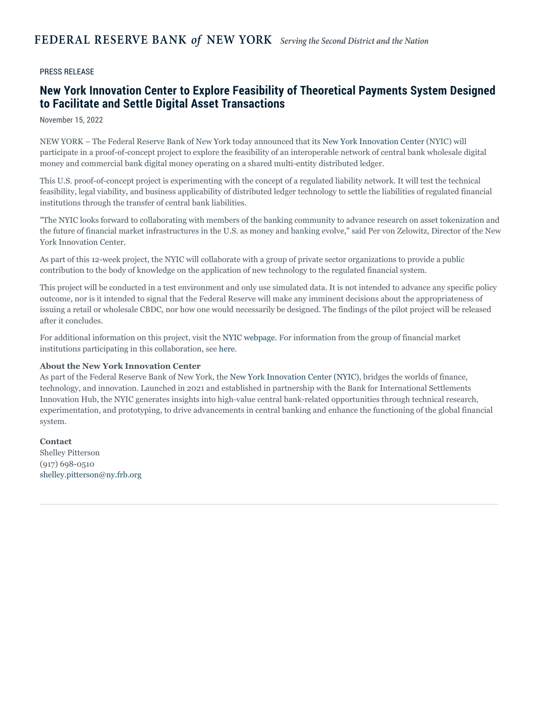

1:00:48 · 4 OPERE
Considerazioni sull'introduzione delle valute digitali da parte delle Banche centrali.
Il filo del discorso
Il contributo affronta le valute digitali di banca centrale a partire da una domanda politica: quali conseguenze può avere un’infrastruttura di pagamento per l’autonomia dei cittadini? Il relatore apre con una critica della formazione e della comunicazione pubblica, richiamando gli apparati ideologici di Althusser. Alla disponibilità di informazioni contrappone la capacità di interrogare le ragioni delle decisioni collettive. Le parentesi su guerra, pandemia e censura costruiscono il quadro delle sue preoccupazioni, senza costituire prove dei meccanismi economici successivamente descritti. La prima parte monetaria mette a confronto cartamoneta, metalli preziosi, inflazione e cambi di valuta. Il relatore sostiene una tesi radicale sulla fragilità della moneta fiduciaria e richiama Weimar; la scheda distingue questa interpretazione da definizioni statistiche e cronologie documentate. Il punto di partenza istituzionale è un comunicato del NYIC del 15 novembre 2022, identificato attraverso data e incipit letti nel video. La distinzione fra un esperimento interbancario con dati simulati e una valuta digitale destinata al pubblico è decisiva per valutarne il significato. La spiegazione procede attraverso Mario e Luisa, clienti di due banche: depositi, passività e regolamento vengono rappresentati come scritture tra soggetti differenti. Il confronto con un registro condiviso permette al relatore di formulare il timore di una maggiore concentrazione dei dati e del potere sui pagamenti. Le note chiariscono i limiti dello schema, la differenza fra Fedwire e CHIPS e l’assenza di conti individuali presso la Federal Reserve. Blockchain, DLT, CBDC e moneta bancaria non sono sinonimi, né l’adozione di un registro condiviso determina da sola il livello di accesso alle informazioni. Il discorso torna infine a contante, progetti britannici e sistemi di punteggio creditizio. Il filo unitario è la richiesta di discutere in anticipo trasparenza, riservatezza, alternative di pagamento e responsabilità delle istituzioni. Il relatore legge questi cambiamenti come possibili strumenti di controllo, ma conclude auspicando che il proprio allarme si riveli superfluo. La scheda conserva tale carattere di argomentazione e previsione: non presenta i rischi prospettati come funzioni già imposte da ogni progetto di moneta digitale, né aggiorna il video a una consulenza economica o normativa attuale.
I libri nel discorso

Ideologia e apparati ideologici di Stato (Note per una ricerca)
Identificazione probabile
Copertina della raccolta contenente il saggio: Copertina della raccolta On Ideology, Verso / Radical Thinkers, 2020, 192 pagine, traduzione Ben Brewster. Contiene il saggio del 1970 e altri testi.
Copertina autentica Verso bianca e rossa, Louis Althusser e On Ideology leggibili. Non è la copertina del fascicolo La Pensée del 1970 né una edizione italiana del saggio; il volume non viene identificato come quello eventualmente mostrato.
Richiamo a Louis Althusser e agli apparati ideologici dello Stato nel discutere scuola, università e media. Il concetto identifica probabilmente il saggio; nessuna edizione viene pronunciata.
Passaggio 2:14 ↗ · Fonti e libro ↗
New York Innovation Center to Explore Feasibility of Theoretical Payments System Designed to Facilitate and Settle Digital Asset Transactions
Prima pagina del comunicato NY Fed, 15 novembre 2022: New York Fed · 15 novembre 2022 · prima pagina del comunicato
Prima pagina autentica del comunicato ufficiale conservato da FRASER, resa dal PDF senza ricostruzioni grafiche. È un documento istituzionale, non una copertina libraria; non viene usato il successivo rapporto dei risultati del luglio 2023.
Data 15 novembre 2022 e lettura dell’incipit inglese sul progetto sperimentale e la rete interoperabile di moneta digitale wholesale e bancaria. Il riscontro è il comunicato NY Fed, non un annuncio di avvio di una CBDC retail.
Passaggio 23:00 ↗ · Fonti e libro ↗
Eretici
Identificazione probabile
Copertina: Lindau · 2016 · traduzione Cristina Cavalli, prefazione Roberto Giovanni Timossi
Immagine autentica dell’opera, controllata visivamente; l’edizione di riferimento non è attribuita al filmato.
Massima attribuita a Chesterton sulla necessità di difendere ciò che è evidente. Il capitolo XX di Heretics permette di identificarne probabilmente il contesto; titolo e traduzione non sono letti nel video.
Passaggio 31:44 ↗ · Fonti e libro ↗New York Innovation Center to Explore Feasibility of Theoretical Payments System Designed to Facilitate and Settle Digital Asset Transactions
Prima pagina del comunicato NY Fed, 15 novembre 2022: New York Fed · 15 novembre 2022 · prima pagina del comunicato
Prima pagina autentica del comunicato ufficiale conservato da FRASER, resa dal PDF senza ricostruzioni grafiche. È un documento istituzionale, non una copertina libraria; non viene usato il successivo rapporto dei risultati del luglio 2023.
Il relatore torna al documento della Federal Reserve sul proof of concept per sostenere la propria interpretazione dei rischi di controllo; il documento resta distinto dalle conseguenze politiche che egli ne ricava.
Passaggio 53:31 ↗ · Fonti e libro ↗